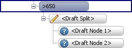
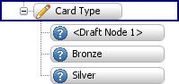
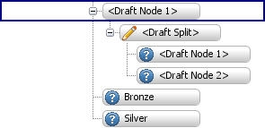

Edit a draft tree split
A Draft Split is a split that is not based on any pre-defined characteristic or rule, it is simply an outline of a split that could be created using a Boolean Expression, Class Set, Matrix or Segmentation Tree. Tree splits that are created using these referenced components or these embedded components rely on pre-defined characteristics existing in the logical data source. A draft split is created without the need for these characteristics to exist in your system.
- With the Segmentation Tree editor open either click on the Palette tab and drag and drop the draft split onto the root node or leaf node you require
or right click on the leaf node/root node and select Insert Draft Split. - The system will automatically add a draft split to your tree that contains two leaf nodes.

- Repeat steps 1 and 2 until you have added all the draft splits you require.
{kind=link}
{kind=link}
You can now go on to define the name of split headers and leaf nodes and add additional leaf nodes and draft splits as required.
Once a draft split has been added to the tree there are a number of ways in which it can be edited.
To edit the draft tree split
A Draft Split is a split that is not based on any pre-defined characteristic or rule, it is simply an outline of a split that could be created using a Boolean Expression, Class Set, Matrix or Segmentation Tree. Tree splits that are created using these referenced components or these embedded components rely on pre-defined characteristics existing in the logical data source. A draft split is created without the need for these characteristics to exist in your system. Once a draft split has been added to the tree the user can easily add descriptions to both the split header and the leaf nodes.
To add a description to the draft split
- With the Segmentation Tree editor open, select either a split header or a leaf node from within a draft split.
- Begin typing.
The system will instantly start adding the name you are typing to the split header or leaf node.
- When you have finished typing, press Enter to confirm the name.
{kind=link}
{kind=link}
Continue until all the split headers and leaf nodes contain the description you require.
A Draft Split is a split that is not based on any pre-defined characteristic or rule, it is simply an outline of a split that could be created using a Boolean Expression, Class Set, Matrix or Segmentation Tree. Tree splits that are created using these referenced components or these embedded components rely on pre-defined characteristics existing in the logical data source. A draft split is created without the need for these characteristics to exist in your system. Once a draft split has been added to the tree the user can easily add additional leaf nodes to the draft split.
To add additional leaf nodes to the draft split
- With the Segmentation Tree editor open, select the split header where you wish the leaf nodes to be added and either right click and select Insert Draft Outcome, or press Enter on your keyboard.
An additional outcome will be created.
- To add an additional leaf node at a specific point, select the leaf node above the position that you wish the leaf node to be added, then either press Enter on your keyboard or right click and select Insert Draft Outcome.
{kind=link}
The leaf node will be added below the leaf node you have selected.
A Draft Split is a split that is not based on any pre-defined characteristic or rule, it is simply an outline of a split that could be created using a Boolean Expression, Class Set, Matrix or Segmentation Tree. Tree splits that are created using these referenced components or these embedded components rely on pre-defined characteristics existing in the logical data source. A draft split is created without the need for these characteristics to exist in your system. Additional draft splits can be added to the tree by the user at any point of the tree.
To add a draft split to an existing leaf node
- With the Segmentation Tree editor open, select the leaf node where you wish the draft split to be added and either right click and select Insert Draft Split, or with the leaf node selected press the Insert key on your keyboard.

{kind=link}
An additional draft split will be created in the tree.
A draft split is a split that is not based on any pre-defined characteristic or rule, because of this the user is allowed to delete a draft leaf node within the tree editor.
To delete a draft split leaf node
- With the Segmentation Tree editor open, within a draft split select the leaf node you wish to delete, then either right click and select Delete Draft Outcome, or press Delete on your keyboard.
The leaf node of the draft split will be deleted.
You can now go on to define leaf node names and assign outcomes to the leaf nodes of the draft splits.